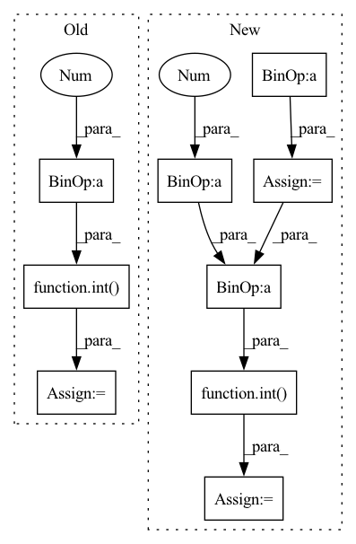

Pattern ID :838

Before Change
ticks_per_beat = DEFAULT_RESOLUTION
ticks_per_bar = DEFAULT_RESOLUTION * 4 // assume 4/4
seconds_per_beat = 60 / DEFAULT_TEMPO
seconds_per_tick = seconds_per_beat / float(ticks_per_beat)
ticks_per_second = float(ticks_per_beat) / seconds_per_beat
// get specific time for notes
notes = []
i = 0
st = 0
while i < len(temp_notes):
pitch = temp_notes[i]
j = i
while j + 1 < len(temp_notes) and temp_notes[j + 1] == pitch:
j += 1
duration = int((j - i + 1) * ticks_per_second / rate)
// duration (end time)
ed = st + duration
st = ed
notes.append(
miditoolkit.midi.containers.Note(
start=st, end=ed, pitch=pitch, velocity=DEFAULT_VELOCITY
)
)
i = j + 1
// get specific time for tempos
tempos = []
i = 0
st = 0
while i < len(temp_tempos):
bpm = temp_tempos[i]
j = i
while j + 1 < len(temp_tempos) and temp_tempos[j + 1] == bpm:
j += 1
duration = int((j - i + 1) * ticks_per_second / rate)
tempos.append(
miditoolkit.midi.containers.TempoChange(bpm, st)
)
st = st + duration
After Change
bpm = temp_tempos[i]
if bpm == 0 :
bpm = DEFAULT_TEMPO
ticks_per_second = DEFAULT_RESOLUTION * bpm / 60
// acc_time += ( i - last_i) / rate
//int( i * ticks_per_second / rate)
j = i
while j + 1 < len(temp_tempos) and temp_tempos[j + 1] == bpm:
j += 1
tempos.append(
miditoolkit.midi.containers.TempoChange(bpm, acc_tick)
)
acc_tick += int(( j - last_i + 1) * ticks_per_second / rate)
last_i = j
i = j + 1
tick_to_time = get_tick_to_time_mapping(ticks_per_beat, tempos)
In pattern: SUPERPATTERN
Frequency: 4
Non-data size: 9
Instances
Fragment ID: 4162015
Project Name: sjtmusicteam/muskits
Commit Name: 6d602b1150c42852c587245c54b9412824d1a842
Time: 2021-09-17
Author: 934356561@qq.com
File Name: muskit/fileio/utils.py
M Class Name: AnonimousClass
N Class Name: AnonimousClass
M Method Name: seq_to_midi(6)
N Method Name: seq_to_midi(6)
M Parent Class:
N Parent Class:
M File Name: muskit/fileio/utils.py
N File Name: muskit/fileio/utils.py
M Start Line: 54
M End Line: 98
N Start Line: 88
N End Line: 141
'>
Before Change
)
dg_edge = dg.split(task="edge")
dg_num_edges_reduced = dg.num_edges - 3
self.assertEqual(
dg_edge[0].edge_label_index.shape[1],
1 + int(dg_num_edges_reduced * 0.8),
)
self.assertEqual(
dg_edge[1].edge_label_index.shape[1],
1 + int(dg_num_edges_reduced * 0.1),
)
self.assertEqual(
dg_edge[2].edge_label_index.shape[1],
dg.num_edges
- 2
- int(dg_num_edges_reduced * 0.8)
- int(dg_num_edges_reduced * 0.1)
)
dg_link = dg.split(task="link_pred")
dg_num_edges_reduced = dg.num_edges - 3
edge_0 = 1 + int(dg_num_edges_reduced * 0.8)
edge_1 = 1 + int(dg_num_edges_reduced * 0.1)
edge_2 = dg.num_edges - edge_0 - edge_1
self.assertEqual(dg_link[0].edge_label_index.shape[1], edge_0)
self.assertEqual(dg_link[1].edge_label_index.shape[1], edge_1)
self.assertEqual(dg_link[2].edge_label_index.shape[1], edge_2)
After Change
dg_node = dg.split()
dg_num_nodes = dg.num_nodes
node_0 = int(dg_num_nodes * 0.8)
node_1 = int(dg_num_nodes * 0.1)
node_2 = dg_num_nodes - node_0 - node_1
self.assertEqual(
dg_node[0].node_label_index.shape[0],
node_0
'>
Fragment ID: 4162012
Project Name: snap-stanford/deepsnap
Commit Name: d0b88a46b1a0f26c6d70de0e453c0d5842602576
Time: 2020-12-22
Author: xhe17@stanford.edu
File Name: tests/test_graph.py
M Class Name: TestGraph
N Class Name: TestGraph
M Method Name: test_split_edge_case(1)
N Method Name: test_split_edge_case(1)
M Parent Class: unittest.TestCase
N Parent Class: unittest.TestCase
M File Name: tests/test_graph.py
N File Name: tests/test_graph.py
M Start Line: 201
M End Line: 242
N Start Line: 201
N End Line: 241
'>
Before Change
img = cv2.cvtColor(img, cv2.COLOR_BGR2RGB).astype(np.float32)
resize_ratio = min(1.0 * self.w_target / w_org, 1.0 * self.h_target / h_org)
resize_w = int(resize_ratio * w_org)
resize_h = int(resize_ratio * h_org)
image_resized = cv2.resize(img, (resize_w, resize_h))
image_paded = np.full((self.h_target, self.w_target, 3), 128.0)
dw = int((self.w_target - resize_w) / 2)
dh = int((self.h_target - resize_h) / 2)
image_paded[dh:resize_h + dh, dw:resize_w + dw, :] = image_resized
image = image_paded / 255.0 // normalize to [0, 1]
After Change
h_target, w_target = target_shape
img = cv2.cvtColor(img, cv2.COLOR_BGR2RGB).astype(np.float32)
resize_ratio = min(1.0 * w_target / w_org, 1.0 * h_target / h_org)
resize_w = int(resize_ratio * w_org)
resize_h = int(resize_ratio * h_org)
image_resized = cv2.resize(img, (resize_w, resize_h))
image_paded = np.full((h_target, w_target, 3), 128.0)
dw = int((w_target - resize_w) / 2)
dh = int((h_target - resize_h) / 2)
image_paded[dh:resize_h + dh, dw:resize_w + dw, :] = image_resized
image = image_paded / 255.0 // normalize to [0, 1]
if self.correct_box:
'>
Fragment ID: 4162009
Project Name: jingtianyilong/yolov4-pytorch
Commit Name: fa2911f6607eb62ed3e362e1480183054382e1fe
Time: 2020-11-24
Author: zijie.guo@daimler.com
File Name: utils/data_augment.py
M Class Name: Resize
N Class Name: Resize
M Method Name: __call__(4)
N Method Name: __call__(3)
M Parent Class: object
N Parent Class: object
M File Name: utils/data_augment.py
N File Name: utils/data_augment.py
M Start Line: 143
M End Line: 150
N Start Line: 144
N End Line: 156
'>
Before Change
ed = int(tick_to_time[tempos[i + 1].time] * rate * time_aug_factor)
tempo_seq[st:ed] = int(tempos[i].tempo + 0.5)
st = int(tick_to_time[tempos[-1].time] * rate * time_aug_factor)
tempo_seq[st:] = int(tempos[-1].tempo + 0.5)
return note_seq, tempo_seq
def seq_to_midi(
After Change
tempos.sort(key=lambda x: (x.time, x.tempo))
assert len(tempos) == 1
tempo_BPM = tempos[0].tempo // global information, beats per minute
tempo_BPS = tempo_BPM / 60.0 // global information, beats per second
note_seq = np.zeros(int(rate * max_time * time_aug_factor), dtype=dtype)
tempo_seq = np.zeros(int(rate * max_time * time_aug_factor), dtype=dtype)
for i in range(len(notes)):
st = int(tick_to_time[notes[i].start] * rate * time_aug_factor)
ed = int(tick_to_time[notes[i].end] * rate * time_aug_factor)
note_seq[st:ed] = notes[i].pitch if (pitch_aug_factor == 0 or notes[i].pitch == 0) else (notes[i].pitch + pitch_aug_factor)
st_time = tick_to_time[notes[i].start] * time_aug_factor
ed_time = tick_to_time[notes[i].end] * time_aug_factor
note_duration = ed_time - st_time // Beats in seconds
beat_num = note_duration * tempo_BPS // Beats nums in note
beat_input = int(beat_num / 0.0125 + 0.5)
tempo_seq[st:ed] = beat_input
return note_seq, tempo_seq
'>
Fragment ID: 4162018
Project Name: sjtmusicteam/muskits
Commit Name: 976232e4df99bdbc8298e2a20436034edc51e9ab
Time: 2022-01-10
Author: 2016202112@ruc.edu.cn
File Name: muskit/fileio/utils.py
M Class Name: AnonimousClass
N Class Name: AnonimousClass
M Method Name: midi_to_seq(5)
N Method Name: midi_to_seq(5)
M Parent Class:
N Parent Class:
M File Name: muskit/fileio/utils.py
N File Name: muskit/fileio/utils.py
M Start Line: 41
M End Line: 60
N Start Line: 41
N End Line: 66